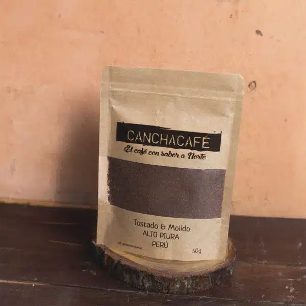
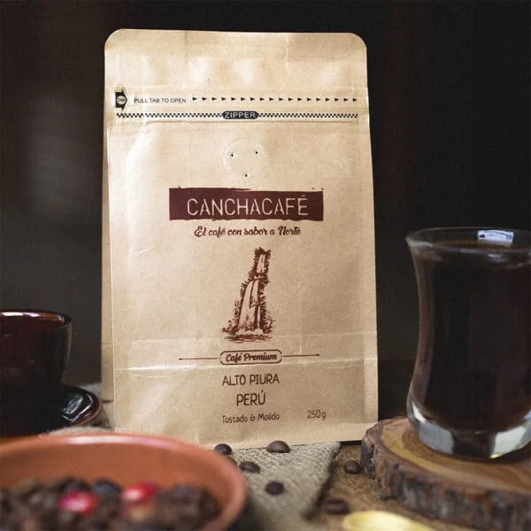
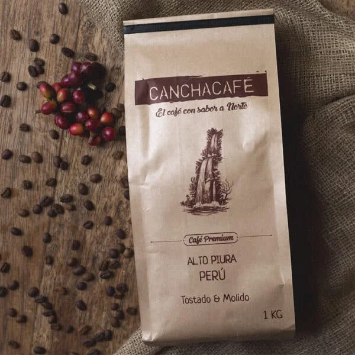
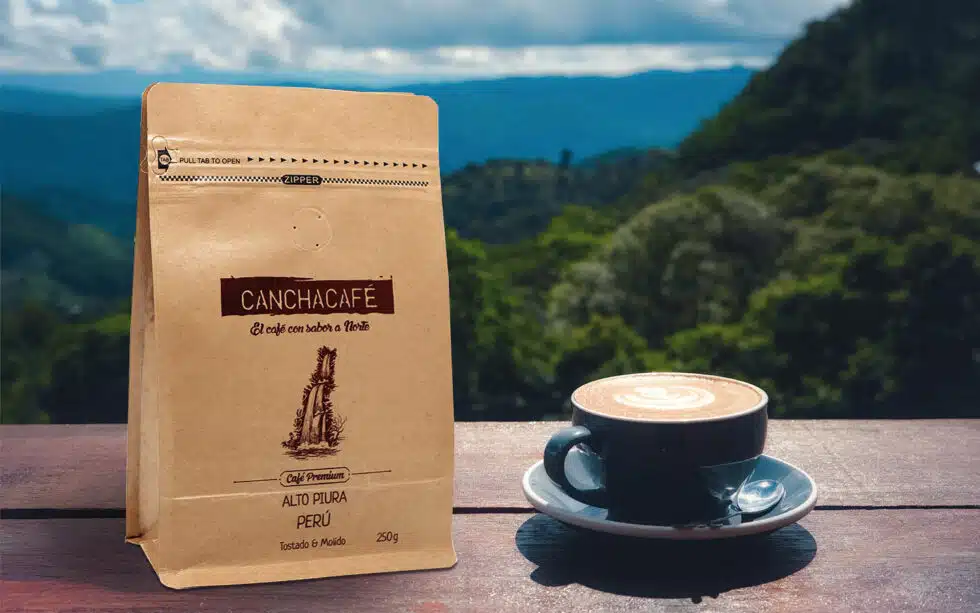

Aroma Andino Canchaque: Catálogo de cafés y métodos
El Arte del Tueste Artesanal
Descubre el viaje de los granos a tu taza
Desde su recolección, el café, según sus características y cualidades, pasa por numerosos procesos hasta llegar a nuestras instalaciones. Una vez aquí, somos responsables de todo el procedimiento que conlleva su tueste.
Café premium Canchaque 50g

Café peruano, tostado y molido, de granos arábica seleccionados.
Variedades: Catimor y típica
Precio: S/ 8.50
Café premium Canchaque 250g

Café peruano, tostado y molido, de granos arábica seleccionados.
Variedades: Catimor y típica
Precio: S/ 25.00
Café premium Canchaque 1Kg

Café peruano, tostado y molido, de granos arábica seleccionados.
Variedades: Catimor y típica
Precio: S/ 60.00

El Arte del Capuchino: Descubre Cómo Prepararlo
Necesitarás:
Pasos:
El capuchino, más que una bebida, es una experiencia, y con Canchacafé esa experiencia se eleva a nuevas alturas. La próxima vez que desees disfrutar de un capuchino, recuerda que el secreto para un sabor excepcional reside en la calidad del café que eliges. Canchacafé es la elección perfecta para aquellos que buscan perfección en cada sorbo.